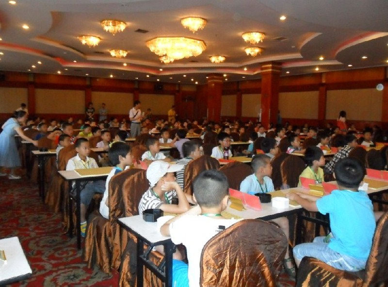
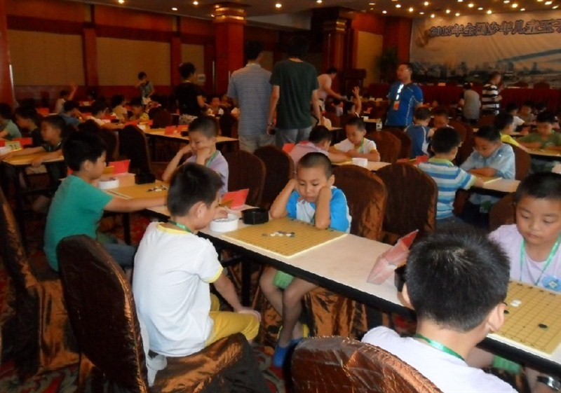
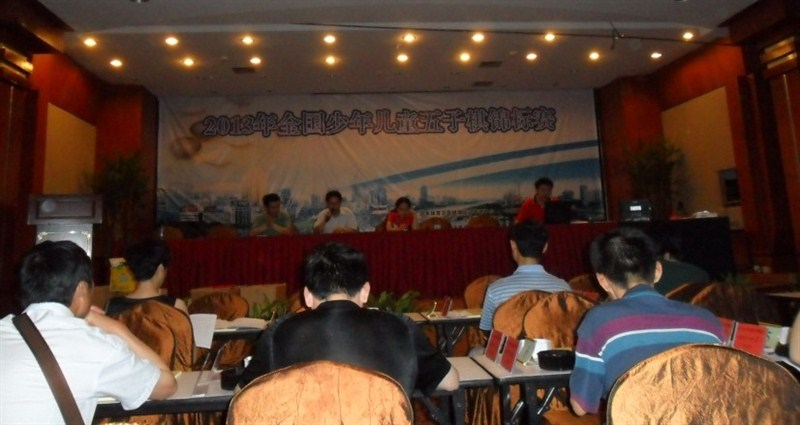

2013年全国少年儿童五子棋锦标赛第一日赛况与看点分析
#1 <font color="red">2013年全国少年儿童五子棋锦标赛第一日赛况与看点分析</font> 作者：小丸.net 发表时间：2013-7-19 21:29:16
2013年全少赛今天完成了第一天的赛事，纵向观看，结果基本在预料之中。
少年男子甲组宁波张建业、上海印周灏同积3分领跑，而被大众看好的戴宇轩积2分位列三台。
少年女子甲组，康绸3分独占女甲鳌头，温州金奕婵2胜1各积2.5分紧随其后，明天她俩将迎来她们之间的历史首战，而金奕婵明天必须战胜康绸才有夺冠的可能。两名南通高手陆梦溪与老牌高手纪香同积2分落后前述棋手，如明日再有一败，双保险将面临土崩瓦解。



少年男子乙组方面，南通周楠与宁波蔡吉吉4分相遇首台，蔡吉吉是宁波隐藏的一匹黑马，能否一黑到底，且看明日之战。有“宽爷”之称的八届浙江赛少儿冠军徐毅宽3分，仅列第6位，而同积3分的棋手却达到7名，本站站长有志青年的公子陈抱扑积2分紧随3分之后。
少年女子乙组方面，南通陈璐宁全胜名列榜首，明天她的对手是同为南通的棋手胡嘉瑶，而最让人惊讶的是，第二台的王婷、邵力、第三台的王玉、陈聆博、四台的赵悦、陈幸均来自南通队的棋手，南通队目前包揽了少年女子乙组的前8，且看明日南通的表演赛。
儿童组方面，男甲唐世祺 ，陈禹航同积4分，女甲 王姚瑶与程昱轩同积3.5位列1台，男乙莫可迪、牟林昊、邵泽佺全胜，女乙南通天生港庞炀全胜惊艳全场。【文 康岩 图 兰志仁】
［ 屏蔽同学于 2013-7-19 21:34:51 时花20金币送鲜花一朵］
［ 屏蔽同学于 2013-7-19 21:34:51 时花20金币送鲜花一朵］
［ 小红眼镜同学于 2013-7-19 21:40:17 时花20金币送鲜花一朵］
［ 掌棋如烟同学于 2013-7-19 22:25:41 时花20金币送鲜花一朵］
［ 釣鱼岛岛主同学于 2013-7-20 17:11:02 时花20金币送鲜花一朵］
#2 Re:2013年全国少年儿童五子棋锦标赛第一日赛况与看点分析 作者：屏蔽 发表时间：2013-7-19 21:35:05
唉。#3 Re:2013年全国少年儿童五子棋锦标赛第一日赛况与看点分析 作者：顾宁馨 发表时间：2013-7-20 2:20:26
又见岚月骗